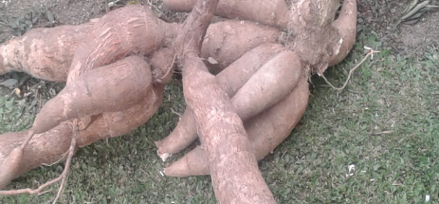
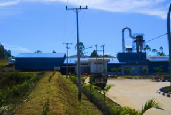
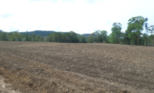
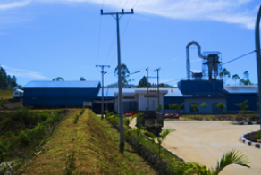
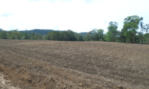

Tanaman singkong / ubi kayu adalah tanaman yang buahnya berupa umbi dan buahnya ada di dalam tanah. Tanaman ubi kayu / singkong termasuk tanaman yang sangat rakus unsur hara. Buah / umbi menyerap air yang sangat tinggi tetapi tidak bisa bertahan di tempat / media tanam yang terlalu lembab (basah).
Pengenalan Ubi Kayu / Singkong (Manihot esculenta Crantz)
1. Lokasi Pabrik & Pengolahan Limbah ± 20 hA.
2. Lokasi Kebun Ubi ± 2.600 hA.
3. Lokasi Perumahan Karyawan.
4. Area Penelitian & Pengembangan (riset).
1. Kebun Inti
2. Kebun Masyarakat
3. Kebun Plasma
a. Penyediaan traktor untuk membajak lahan
b. Penyediaan Bibit
c. Penyediaan Pupuk
d. Penyediaan Pestisida, dll.
 




Persiapan lahan bertujuan agar tanah menjadi gembur, terhindar/terjaga dari penggenangan air, mempermudah proses penanaman dan perawatan,
pemberian pupuk kandang/kompos, dan pemberian kapur pertanian (dolomite).
Lahan yang siap tanam harus diberi pupuk kadang/kompos, pemberian kapur pertanian (dolomite), pengolahan lahan (pembajakan), pembuat
drainase air (bisa dengan system penggulutan tanah), dan melakukan pemupukan pada setiap lubang yang akan ditanam.
Cara penanaman bibit ubi adalah :
1. Jarak tanam mengikuti varietas dari bibit yang akan ditanam.
2. Kedalaman tanam tidak boleh terlalu dangkal (15-20 cm).
3. Posisi tanam harus tegak lurus.
4. Jika memungkinkan barisan penanaman mengikuti arah matahari (barat-timur).
Bibit yang akan ditanam dilakukan pemilihan batang yang sudah tua.
Ukuran pemotongan batang bibit berkisar 25-30 cm.
Selanjutnya dilakukan penggoresan sekitar pangkal batang (di bawah mata batang).